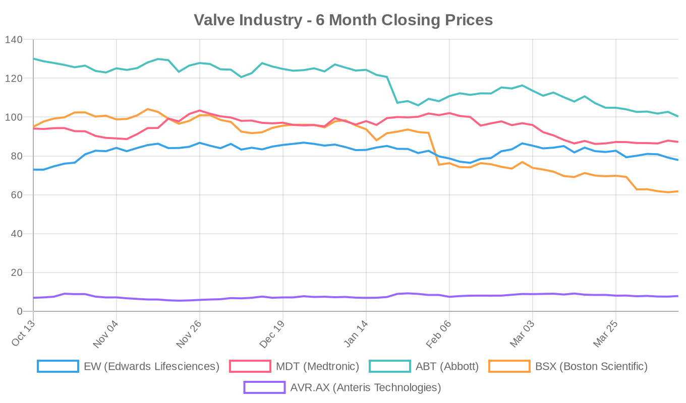
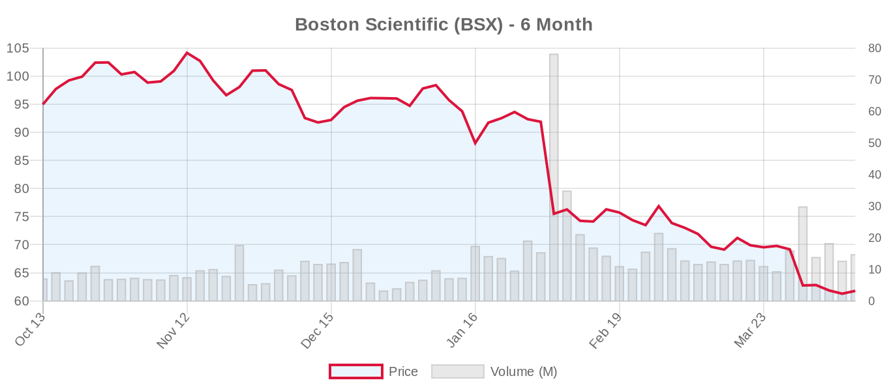
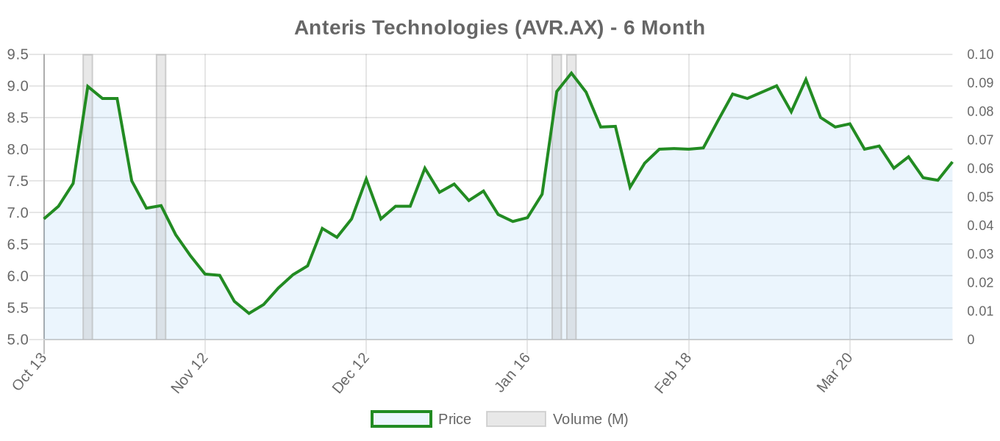

|
||||||||
|
April 13, 2026 By E. Nolan Beckett |
||||||||
|
||||||||
Executive SummaryTwo major CMS coverage decisions are in motion today — one revisiting TAVR national coverage and another opening a new pathway for transcatheter tricuspid valve replacement — signaling a pivotal regulatory moment for structural heart. A large single-center study of over 5,200 TAVR patients quantifies the sobering early-mortality toll of vascular access complications, while editorials in the European Heart Journal and Annals of Thoracic Surgery challenge the field to confront lifetime valve management and the economic incentives driving TAVR expansion into younger patients. For the clinical audience: today's digest sits at the intersection of regulatory, economic, and outcomes science. CMS has opened a reconsideration of the TAVR National Coverage Determination (CAG-00430R2) and initiated a new NCA for transcatheter tricuspid valve replacement (CAG-00467N) — the latter representing the first formal US coverage pathway for TTVR, a signal that the TRISCEND II and TRILUMINATE evidence base is being taken seriously at the federal level. Meanwhile, a 5,230-patient TAVR vascular complication analysis provides granular data on a problem that remains underappreciated as TAVR moves downstream. And provocative commentaries from the Annals of Thoracic Surgery force the profession to reckon with the economic forces pushing transcatheter therapies ahead of the evidence in younger populations — a concern we've been tracking in this newsletter and one that sits squarely within the ongoing tension between the 2020 ACC/AHA and 2025 ESC/EACTS guidelines on age thresholds. Today's Key Findings
Aortic Valve (TAVR/TAVI)Vascular Access Complications After TAVR: The Early Price of a "Minimally Invasive" Procedure[NOTABLE] Mesar et al. present a retrospective analysis of 5,230 transfemoral TAVR patients from a single high-volume center, stratifying outcomes by complication type. Vascular complications occurred in 2.9% (n=154), but their impact was disproportionate: in-hospital mortality was 7.8% vs. 0.2% in uncomplicated cases, and propensity-matched 30-day mortality was four-fold higher (OR 4.02, 95% CI 1.98–8.18). Among vascular complications, 36% involved intraoperative bleeding requiring intervention and 27% had limb ischemia or dissection. Reassuringly, patients who survived the early postoperative period had comparable 5-year survival (51.1% vs. 50.9%) — suggesting the damage is front-loaded but not permanently prognostic. Editorial perspective: This study is a powerful reminder that "low-risk TAVR" is not "no-risk TAVR." A 2.9% vascular complication rate in 2026 is notable at a high-volume center and may understate real-world rates at lower-volume sites. As the field expands TAVR to younger patients — where the 2025 ESC guidelines now recommend TAVR as primary therapy at age ≥70 with tricuspid anatomy and transfemoral access — the absolute number of patients experiencing these devastating early complications will increase. The finding that vascular complications essentially convert TAVR into a high-risk procedure (7.8% in-hospital mortality) should give pause to those who frame the TAVR-vs-SAVR conversation purely in terms of procedural mortality averages. Study limitations include single-center design, retrospective analysis, and the inherent selection bias of propensity matching in a small complication cohort. These data complement the recent multicenter registry showing plug-based vascular closure devices achieving 99.8% immediate hemostasis rates — technology matters at the access site. Lifetime Valve Management and the Economics of TAVR ExpansionMainali and Pope contribute an editorial in the Annals of Thoracic Surgery that directly confronts the economic forces driving TAVR adoption in younger patients. While the abstract is not available, the title alone signals a critical conversation the field needs to have: when hospitals, device manufacturers, and proceduralists all benefit financially from expanding transcatheter volume, is the patient's lifetime valve management strategy receiving adequate weight in decision-making? Editorial perspective: This commentary arrives at a moment of genuine guideline tension. The 2025 ESC guidelines lowered the TAVI-preferred threshold to age 70 (from the ACC/AHA's 80), based partly on the DEDICATE trial and medium-term durability data. But as our reference literature documents, THV explantation carries 12–17% mortality, TAV-in-SAV risks patient-prosthesis mismatch, and redo-TAVR — while growing (84% of reinterventions) — has limited long-term data. The critical voices of Bowdish, Badhwar, and others who have warned about therapies outpacing evidence deserve amplification here. The economic analysis matters because it exposes a misalignment: the financial incentive is to do the first TAVR, but the clinical responsibility extends across the patient's lifetime. This editorial should be required reading for Heart Teams. Type A Dissection After TAVI: Prevention and ManagementZheng and Cheng publish a commentary in the International Journal of Cardiology on preventing and managing type A aortic dissection after TAVI. While rare, this catastrophic complication merits attention as TAVI volumes grow and patient populations evolve. The ascending aorta undergoes significant mechanical stress during valve deployment, and pre-existing aortopathy — particularly relevant in bicuspid aortic valve patients — may elevate risk. Both guidelines classify BAV TAVI as IIb, and aortic dilation requiring surgery favors SAVR. Anomalous Left Circumflex Artery: A Hidden Hazard in Valve InterventionsFurukawa et al. present a narrative review in the Annals of Thoracic Surgery synthesizing 45 publications on anomalous origin of the left circumflex artery (AOLCX) and its implications for both surgical and transcatheter valve interventions. The retro-aortic course puts the vessel at risk during TAVR (via compression or ostial occlusion) and surgery (via deep sutures). The authors emphasize pre-procedural CT angiography and Heart Team–based procedure selection — particularly relevant as TAVR expands to lower-risk, anatomically complex patients where such variants may be encountered more frequently. Surgical Rescue: Over-Expanded THV in a Calcified, Aneurysmatic AnnulusBelluschi et al. report in the European Heart Journal on the surgical implantation of an over-expanded transcatheter heart valve as a rescue strategy for a patient with a calcified and aneurysmatic annulus. While details are limited (no abstract), this case illustrates the creative hybrid approaches required when standard surgical or transcatheter pathways are inadequate — and underscores why lifetime valve management planning at the index procedure is now emphasized in the 2025 ESC guidelines. Surgical vs. Transcatheter ComparisonsBuilding the Hybrid Mindset: Transcatheter Training for Surgical ResidentsZancanaro and Danesi contribute an editorial perspective in the European Journal of Cardio-Thoracic Surgery on developing transcatheter skills during cardiac surgery residency. The subtitle — "Building the Hybrid Mindset without Losing the Craft" — captures the central tension. As the structural heart field increasingly demands operators fluent in both open and catheter-based techniques, training programs must evolve. The risk, as the authors implicitly acknowledge, is that surgical volume erosion from TAVR and TEER expansion could undermine the very surgical training pipeline needed to manage complications, perform complex reoperations, and treat patients who remain surgical candidates by all guideline criteria. Editorial perspective: This training question has direct clinical implications. If the next generation of cardiac surgeons lacks open aortic valve replacement volume because TAVR has captured the 70+ population (ESC) or the 80+ population (ACC/AHA), who performs the SAVR in 55-year-olds with bicuspid valves? Who explants the failing TAVR? The field must solve this simultaneously — expanding transcatheter competency without hollowing out surgical expertise. Device & TechnologyTHOC6 and Cardiac Development: Basic Science With Structural Heart ImplicationsYuan et al. report in Experimental Cell Research that THOC6 knockout in cardiomyocytes leads to reduced contractile proteins, disrupted sarcomeric organization, and early features of both hypertrophic and dilated cardiomyopathy. Approximately 80% of patients with Beaulieu-Boycott-Innes syndrome (biallelic THOC6 loss-of-function) have cardiac anomalies including structural heart disease. This basic science work provides the first mechanistic link between THOC6 and cardiac development — early translational relevance is limited, but understanding genetic contributors to structural heart disease may eventually inform screening and prevention strategies. Regulatory & PolicyCMS Reconsiders TAVR National Coverage (CAG-00430R2)[NOTABLE] The Centers for Medicare & Medicaid Services has opened a reconsideration of the TAVR National Coverage Determination (CAG-00430R2). The current NCD, last updated in 2019, mandates TAVR be performed at hospitals meeting specific volume and infrastructure requirements, including the presence of a cardiac surgery program. Any revision could address several active debates: site-of-service requirements (two ongoing trials — TRACS and a Polish counterpart — are randomizing TAVI with vs. without on-site surgery), coverage for emerging indications (moderate AS with HF, asymptomatic severe AS per EARLY TAVR data), and updated risk-stratification requirements. Clinical and market impact: A liberalized NCD could significantly expand the number of US sites performing TAVR, increase procedural volumes, and potentially open coverage for indications not currently supported — a scenario that would benefit device manufacturers but raises quality and safety concerns at lower-volume centers. Conversely, CMS could tighten requirements in response to expanding indications. We will track this closely. CMS Opens First NCA for Transcatheter Tricuspid Valve Replacement (CAG-00467N)[NOTABLE] In what may be the most significant regulatory development for the tricuspid space in the US, CMS has initiated a National Coverage Analysis for transcatheter tricuspid valve replacement (CAG-00467N). This is the first-ever US NCA for TTVR, reflecting the maturation of the evidence base — particularly the TRISCEND II pivotal trial of the Edwards EVOQUE system and the broader body of evidence (TRILUMINATE for TEER, Tri.Fr) that drove the 2025 ESC to grant Class IIa status to transcatheter TV therapy. Editorial perspective: This NCA is a watershed moment for the tricuspid space. The 2020 ACC/AHA guidelines did not address transcatheter TR therapy at all — the trials hadn't read out. Now CMS is formally evaluating TTVR coverage, which could create a reimbursement pathway that fundamentally changes how severe TR is managed in the US. However, the evidence base for TTVR specifically (as opposed to TEER) remains relatively thin. TRISCEND II showed symptom and QoL benefits but also higher bleeding and pacemaker rates. The CMS review will need to grapple with whether the benefit-risk profile justifies national coverage, or whether coverage with evidence development (CED) — requiring registry enrollment — is more appropriate. Edwards Lifesciences stands as the primary beneficiary of a favorable determination. Industry & MarketToday's twin CMS announcements — TAVR NCD reconsideration and TTVR NCA initiation — represent a pivotal regulatory week for the structural heart industry. Edwards Lifesciences is the most directly affected company, with its SAPIEN franchise central to any TAVR coverage revision and its EVOQUE system the lead candidate for TTVR coverage. Abbott's TriClip (TEER for TR, covered under a separate pathway) and its MitraClip franchise are less directly impacted by these specific NCAs but benefit from the broader regulatory tailwinds. The TAVR NCD reconsideration has multi-directional implications: a liberalized NCD expanding eligible sites or covered indications would boost Edwards and Medtronic TAVR volumes; a more restrictive approach — say, requiring coverage with evidence development for expanded indications — could constrain growth. Meanwhile, the TTVR NCA creates a potential new revenue stream for Edwards in a market that currently has no US reimbursement pathway for valve replacement in the tricuspid position. Earnings season is imminent: Abbott reports Q1 on April 16, Edwards and Boston Scientific both report April 22. Expect all three to be asked about the CMS announcements on their earnings calls. Financial AnalysisThe structural heart device sector continues to face macroeconomic headwinds even as clinical and regulatory catalysts accumulate. The stark divergence in 6-month stock performance — Edwards up 6.7%, Anteris up 13%, but Abbott down 23% and Boston Scientific down 35% — reflects how investor sentiment is being shaped by company-specific factors well beyond structural heart. Abbott's decline is driven by broader portfolio concerns including litigation exposure, while Boston Scientific's dramatic selloff reflects valuation compression in a high-multiple medtech stock amid tariff uncertainty and sector rotation. The CMS actions announced today are material for Edwards, which derives approximately 40% of revenue from TAVR. A favorable TTVR NCA outcome would open an entirely new reimbursement category. Edwards' upcoming April 22 earnings call will be the first opportunity for management to comment publicly on both the TAVR NCD reconsideration and the TTVR NCA. With the stock trading at 23.5x forward earnings — well below its historical premium — any positive regulatory signal could catalyze re-rating. Conversely, Medtronic's structural heart business (Evolut FX+, Intrepid TMVR) operates within a diversified portfolio that dilutes the impact of any single regulatory action, though the Evolut franchise would benefit from TAVR NCD liberalization. The small-cap/pre-revenue segment tells its own story. Anteris Technologies, pursuing CE Mark and a pivotal US trial for its DurAVR single-piece TAVR valve, has gained 13% over six months as its clinical program advances — though its A$0.8B market cap and negative forward P/E reflect execution risk. Private companies including JenaValve (aortic regurgitation focus), Meril Life Sciences (Myval, validated in the LANDMARK trial), and VDyne (TTVR, TRIVITA pivotal trial just registered) represent the next wave of competitive pressure. Valve Industry Stocks Edwards Lifesciences (EW)
Edwards is the epicenter of today's regulatory news. The TAVR NCD reconsideration (CAG-00430R2) and TTVR NCA initiation (CAG-00467N) both directly impact the company's two most important growth platforms. The stock has recovered modestly from its 52-week low of $68.63 but remains 11% below its 6-month high. With earnings 10 days away, the CMS actions provide management an opportunity to frame a compelling growth narrative — particularly for EVOQUE in the tricuspid space. The DurAVR competition from Anteris bears monitoring but remains early-stage. Edwards' forward P/E of 23.5x represents compressed valuation relative to its 5-year average, suggesting the market is pricing in slowing TAVR growth — a narrative that CMS liberalization could reverse. Medtronic (MDT)
Medtronic's structural heart business — anchored by the Evolut FX+ TAVI platform and the Intrepid TMVR system (still in pivotal trial) — represents a meaningful but diluted portion of its $112B diversified portfolio. The stock's 7.3% 6-month decline reflects broader medtech pressures rather than structural-heart-specific concerns. The PERFECT registry studying Evolut FX+ outcomes is now recruiting in Portugal, adding real-world evidence. A favorable TAVR NCD revision would benefit Medtronic's Evolut franchise, though less dramatically than Edwards given portfolio diversification. Forward P/E of 14.4x is attractive for a defensive large-cap — analyst targets imply 25%+ upside. Abbott (ABT)
Abbott hit a fresh 52-week low of $99.34 this week, down nearly 23% over six months in its sharpest sustained decline in years. While the structural heart portfolio (MitraClip, TriClip, and the recently launched balloon-expandable TAVI system) continues to grow, the stock is being weighed down by litigation overhang and broader portfolio concerns. The REPAIR-MR trial (MitraClip vs. surgery for primary MR) is now active but not recruiting — data from this landmark study will be pivotal. Abbott reports earnings April 16 — just 4 trading days away — and the market will scrutinize structural heart growth rates closely. At 16.4x forward earnings, valuation is near a decade low. Boston Scientific (BSX)
Boston Scientific has experienced the sharpest decline in the group — down 35% over six months despite maintaining a strong-buy consensus from 32 analysts. The structural heart portfolio (ACURATE neo2 TAVI, WATCHMAN) is a smaller contributor relative to electrophysiology and interventional cardiology. The magnitude of the selloff likely reflects valuation compression from a trailing P/E above 30x in a market punishing premium multiples. At 15.8x forward earnings, the stock looks meaningfully disconnected from analyst targets — the average target implies nearly 60% upside. Earnings April 22 will be a critical test. Anteris Technologies (AVR.AX)
Anteris is the sole gainer in the structural heart space over six months, advancing 13% as its DurAVR single-piece 3D-printed TAVR valve progresses through clinical evaluation. The pivotal trial (NCT07194265) is recruiting 1,650 patients in a head-to-head comparison against SAPIEN and Evolut series valves, while the early feasibility study (NCT05712161) has completed enrollment of 15 patients. The thesis is high-risk/high-reward: DurAVR's single-piece bovine pericardial design could offer superior hemodynamics and durability, but execution risk remains substantial for a pre-revenue company with a single-analyst coverage universe. JenaValve (private, focused on aortic regurgitation), Meril Life Sciences (Myval, validated in LANDMARK), and J Valve Technology (private) continue to operate outside public markets. Market Outlook: Earnings season will dominate the next two weeks: Abbott (April 16), Edwards and Boston Scientific (April 22), Medtronic (May 20). The CMS regulatory actions create an unusually favorable backdrop for Edwards' earnings narrative, while Abbott and Boston Scientific need to demonstrate that structural heart growth can offset broader portfolio headwinds. The structural heart sector remains in a paradoxical position — clinical evidence and regulatory pathways are expanding (TTVR NCA, TAVR NCD revision, asymptomatic AS data), but macroeconomic pressures and valuation compression are preventing stocks from reflecting the growth fundamentals. The disconnect between analyst targets and current prices across the sector suggests either significant upside potential or that consensus estimates haven't yet adjusted to a slowing macro environment. Clinical Trial UpdatesAortic Valve Trials
Mitral Valve — Repair Trials
Mitral Valve — Replacement Trials
Tricuspid Valve — Repair Trials
Tricuspid Valve — Replacement Trials
Other Relevant Trials
Social & Conference HighlightsNo major conference presentations today, but all eyes turn to the approaching earnings season as a proxy for industry health. The surgical training editorial from Zancanaro and Danesi in EJCTS captures an ongoing professional identity debate that plays out at every major meeting — how to train the next generation of structural heart operators who can both operate and catheterize. Expect this theme to dominate the agenda at upcoming STS and EACTS sessions. Looking ahead: Abbott earnings land Wednesday, April 16 — the first structural heart company to report this quarter. We'll be listening for MitraClip and TriClip growth metrics, commentary on the CMS regulatory actions, and any signals on the REPAIR-MR timeline. Edwards and Boston Scientific follow April 22, making next week the most consequential earnings stretch of the year for structural heart. Stay tuned. — E. Nolan Beckett, The Valve Wire |
||||||||
|
|
||||||||
|
||||||||
|